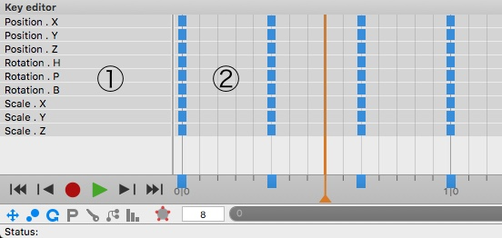

Key EditorIf you haven't read the documentation about the Timeline please read this sections first. The main purpose of Key editor is to get a overview about the timing of an animation. You neither see the actual values of the parameters nor the interpolation type between the values. But you can see which parameters are changing at a certain time. Only parameter tracks with more than one key appear in the Key Editor. This has the advantage that the Key Editor won't be cluttered with tracks in which actually no animation takes place. Key Editor Controls:
|